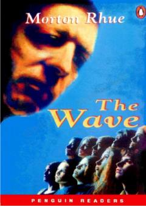

TWMaktabdagi xavfli ijtimoiy tajriba haqidagi ta'sirli roman.
Tarix o'qituvchisi Ben Ross o'z o'quvchilariga fashistlar Germaniyasidagi voqealarni tushuntirish uchun tajriba o'tkazadi. Ushbu tajriba tezda nazoratdan chiqib, maktabda xavfli ijtimoiy harakatga aylanadi. Kitob haqiqiy voqealarga asoslangan bo'lib, guruh bosimi va itoatkorlikning xavfli tomonlarini ochib beradi.